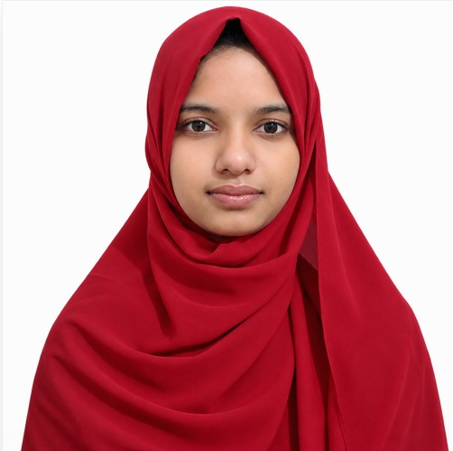
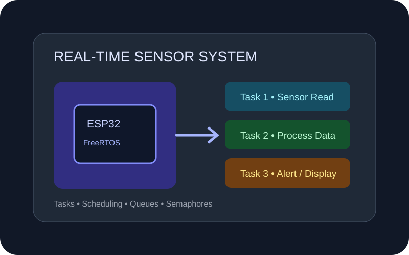

Programming
Python · C · C++
AVAILABLE FOR LEARNING & OPPORTUNITIES
Hello, I'm
I'm an undergraduate student interested in building useful digital experiences and intelligent systems by combining software, hardware, and creativity.

01 / ABOUT ME
I'm Sukria Akter, an Internet of Things and Robotics Engineering undergraduate at the University of Frontier Technology, Bangladesh. My interests sit at the intersection of software, electronics, connected devices, and problem-solving.
My programming journey is growing through university coursework and hands-on practice. I work with programming fundamentals and explore web development alongside IoT and robotics. I enjoy learning by building projects, understanding how each component works, and improving through experimentation.
I'm currently learning Full Stack Web Development and strengthening my foundations in Python, C/C++, embedded systems, and modern web technologies. Outside programming, I enjoy discovering new ideas and learning technologies that can turn into useful real-world solutions.
02 / WHAT I WORK WITH
A growing toolkit across software, connected devices, and development tools.
Python · C · C++
HTML · CSS · JavaScript · React · Next.js
ESP32 · Sensors · Embedded Systems · RTOS
Git · GitHub · VS Code · Figma
Skills shown reflect technologies I have studied or explored; proficiency grows with practice.
03 / EDUCATION
University of Frontier Technology, Bangladesh
Department of Internet of Things & Robotics Engineering (IRE), Gazipur, Bangladesh.
HSC: 2022 (GPA: 4.92) | SSC: 2020 (GPA: 5.00)
04 / EXPERIENCE
I am at the beginning of my professional journey and do not yet have formal industry employment. I am building practical experience through academic projects, self-directed learning, technical exploration, and ongoing Full Stack Web Development learning.
As I complete projects and training, I will add verified details, outcomes, and links here.
05 / SELECTED WORK
A selection of academic and learning projects. Open each project for its technology overview, challenges, and next steps.

IOT · SMART AGRICULTURE
Dashboard for monitoring field conditions with sensors and an ESP32-based connected system.
View project details ↗
EMBEDDED · RTOS
ESP32-powered project exploring real-time sensor monitoring and task scheduling.
View project details ↗WEB DEVELOPMENT · E-COMMERCE
A daily market price tracker for essential goods in Bangladesh.
View project details ↗06 / GET IN TOUCH
Have a project, learning opportunity, or collaboration in mind? Feel free to reach out.